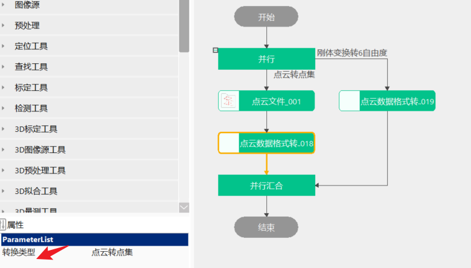

Công cụ này chủ yếu giải quyết nhu cầu chuyển đổi giữa các loại dữ liệu khác nhau, thay thế cách thực hiện bằng script hoặc biểu thức.
Bước 1: Thêm công cụ định dạng dữ liệu điểm mây, chọn loại chuyển đổi, như hình 3-1 hiển thị;

| Tên tham số | Mô tả tham số |
|---|---|
| Đầu vào phép biến đổi rigid body 1/2 | Đầu vào ma trận biến đổi |
| Đầu vào tư thế 6 bậc tự do | Đầu vào tư thế, bậc tự do di chuyển theo ba trục tọa độ vuông góc x, y, z và bậc tự do quay quanh ba trục tọa độ này, thường biểu diễn bằng Tx, Ty, Tz, Rx, Ry, Rz |
| Đầu vào tập điểm điểm mây | Dữ liệu tập điểm, kiểu là std::vector<stVW_PointXYZ> |
| Đầu vào dữ liệu điểm mây | Dữ liệu điểm mây, kiểu là scVoxelPointCloud<> |
| Đầu vào tập điểm ảnh chiều sâu | Đầu vào tập điểm ảnh chiều sâu, kiểu là std::vector |
| Đầu vào vector | Đầu vào vector cần xoay |
| Đầu vào vector trục xoay | Đầu vào vector trục xoay |
| Đầu vào góc Euler | Đầu vào góc Euler, nhiều lần xoay quanh trục tọa độ |
| Tên tham số | Mô tả tham số |
|---|---|
| Loại chuyển đổi | Hiện tại hỗ trợ: nhân ma trận biến đổi rigid body, nghịch đảo biến đổi rigid body, nghịch đảo ma trận xoay của biến đổi rigid body, biến đổi rigid body sang 6 bậc tự do, 6 bậc tự do sang biến đổi rigid body, điểm mây sang tập điểm, tập điểm sang điểm mây, điểm mây sang tập điểm ảnh chiều sâu, tập điểm ảnh chiều sâu sang điểm mây, chuyển đổi vector, góc Euler sang quaternion |
| Thứ tự xoay của cánh tay robot | Hỗ trợ X-Y-Z hoặc Z-Y-X |
| Góc xoay | Góc độ xoay |
| Tên tham số | Mô tả tham số |
|---|---|
| Đầu ra phép biến đổi rigid body | Ma trận biến đổi rigid: Trans, ma trận tịnh tiến Ma trận biến đổi rigid: Matrix, ma trận xoay |
| Đầu ra tư thế 6 bậc tự do | Đầu ra tư thế, thường biểu diễn bằng Tx, Ty, Tz, Rx, Ry, Rz |
| Đầu ra tập điểm 3D | Đầu ra tập điểm điểm mây, kiểu là std::vector<stVW_PointXYZ> |
| Đầu ra dữ liệu điểm mây | Dữ liệu điểm mây, kiểu là scVoxelPointCloud<> |
| Đầu ra tập điểm ảnh chiều sâu | Đầu ra tập điểm ảnh chiều sâu, kiểu là std::vector |
| Đầu ra vector | Đầu ra vector sau khi xoay, kiểu là scVoxelVector |
| Đầu ra quaternion | Đầu ra quaternion sau khi chuyển đổi, xoay quanh một trục xoay nhất định một góc độ, kiểu là std::vector |
| Tên tham số | Mô tả tham số |
|---|---|
| Đầu ra phép biến đổi rigid body | Ma trận biến đổi rigid: Trans, ma trận tịnh tiến Ma trận biến đổi rigid: Matrix, ma trận xoay |
| Đầu ra tư thế 6 bậc tự do | Đầu ra tư thế, thường biểu diễn bằng Tx, Ty, Tz, Rx, Ry, Rz |
| Đầu ra tập điểm 3D | Đầu ra tập điểm điểm mây, kiểu là std::vector<stVW_PointXYZ> |
| Đầu ra dữ liệu điểm mây | Dữ liệu điểm mây, kiểu là scVoxelPointCloud<> |
| Đầu ra tập điểm ảnh chiều sâu | Đầu ra tập điểm ảnh chiều sâu, kiểu là std::vector |
| Đầu ra vector | Đầu ra vector sau khi xoay |
| Đầu ra quaternion | Đầu ra quaternion sau khi chuyển đổi |
| Thời gian thực thi | Thời gian thực thi của công cụ |
| Kết quả thực thi | Kết quả thực thi của công cụ |
参见“\Samples\3D\点云\点云数据格式转换工具.gvp”。